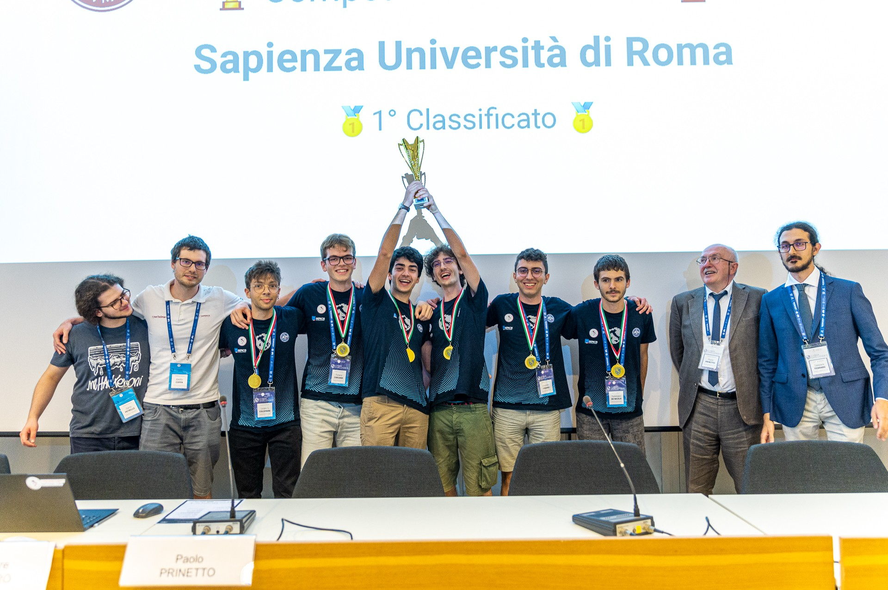
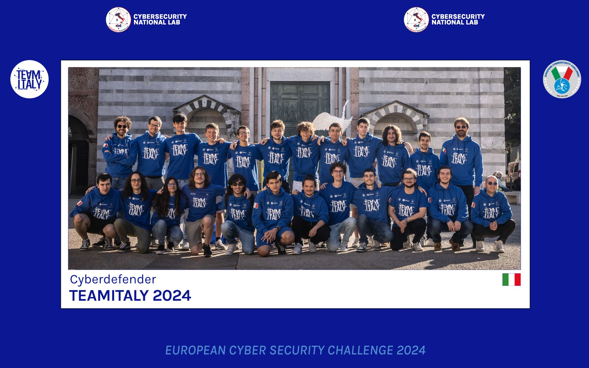
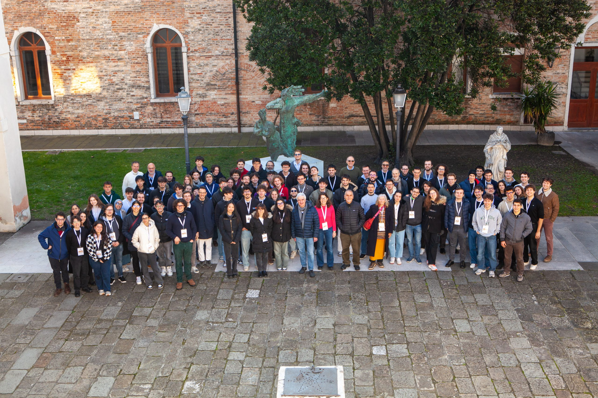

My Path
A journey through AI, robotics, and cybersecurity.

The launch point
CyberChallenge was the launch point for me. The three-month intensive training in cryptography, web security, reverse engineering, and software exploitation taught me how to focus under pressure.
My university team won the national competition against 42 other universities, and that success turned into responsibility: we became tutors for the next years, helping the following cohorts learn the same discipline and practical thinking.

Hardware Hacking & Rev
After CyberChallenge, I specialized in reverse engineering and hardware hacking, spending a lot of time playing CTFs with TheRomanXpl0it team. The work pushed me deeper into the kinds of problems where curiosity matters as much as technique.
In 2024, I joined Team Italy and played the DEF CON CTF 32 with mHackeroni in Las Vegas. It was an intense and memorable experience: a high-pressure environment, world-class competitors, and a chance to measure my skills against some of the best offensive security minds in the field.

ELICSIR Foundation
I participated in the Orthogonal School, an intensive, complementary path designed for motivated students in computer science. Over two years, I worked closely with exceptional mentors on problems spanning distributed systems and algorithmic optimization, gaining both technical depth and a research mindset.
The school's philosophy — orthogonal to traditional academics — proved transformative: rigorous mentorship, encounters with leading researchers and practitioners, and an environment that prizes curiosity and merit over credentials alone.